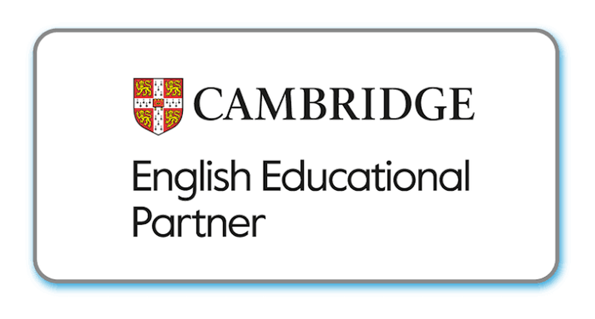
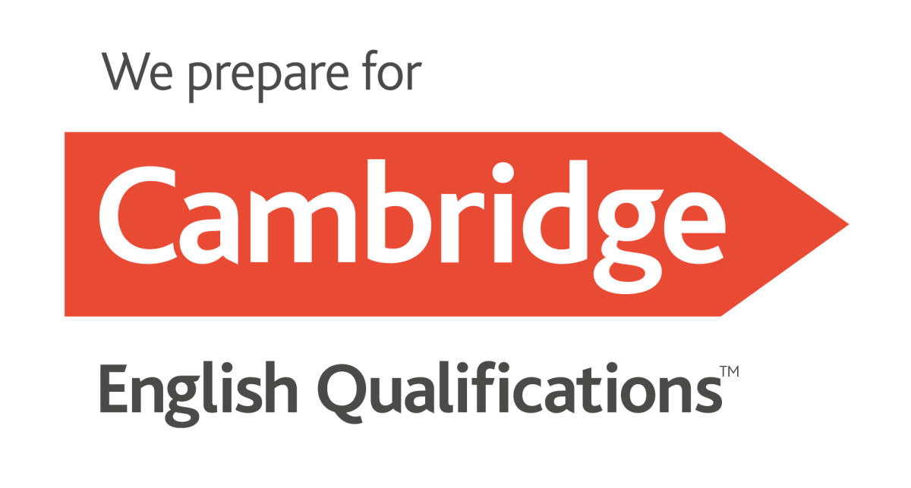
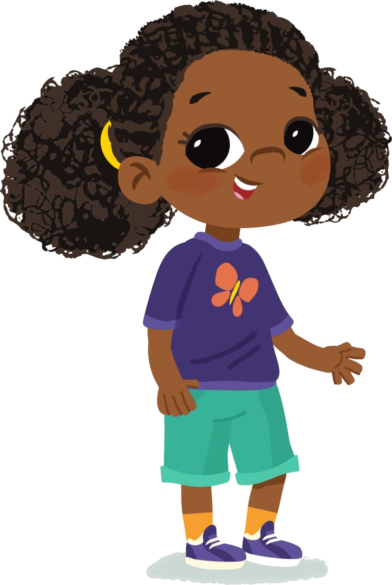
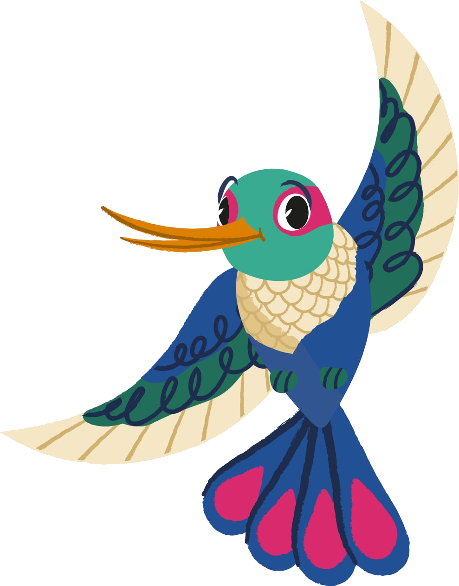
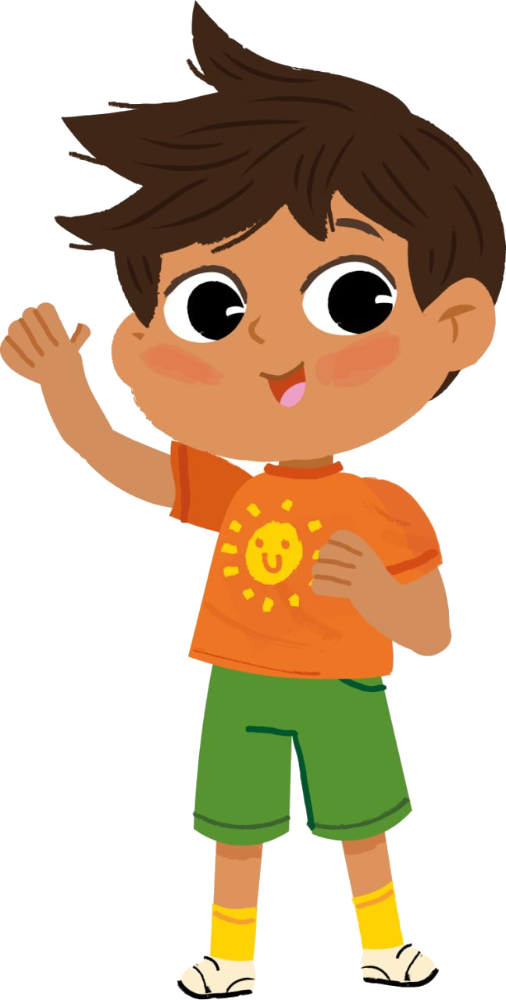

Selecione indicadores observados no mês: o texto familiar é gerado automaticamente a partir da matriz mensal.
Dados do relatório
Este material acompanha um recorte do percurso mensal. Para a visão avaliativa consolidada, use o Report Card do term correspondente.
Entrada e permanência na propostaEscolha a frase que melhor descreve como a criança iniciou e se manteve em uma experiência significativa.
Resposta à propostaConsidere instruções, combinados ou perguntas da rotina, em inglês ou português.
Comunicação em inglêsConsidere gesto, apontamento, escolha de imagem, palavra ou frase: todas são evidências válidas.
Investigação da experiênciaObserve o que a criança fez com materiais, perguntas ou desafios da proposta.
Interação com o grupoConsidere turnos, compartilhamento de materiais e aproximação de pares e adultos.
Uma ação de autonomiaEscolha a evidência mais frequente na rotina do mês.
O gerador produz o texto automaticamente. Antes de salvar, confira apenas os dados de identificação e selecione “gráficos/fundos da página” na janela de impressão.
〰
〰


Acompanhamento mensal
February Learning Snapshot
Um retrato das experiências e descobertas vividas neste mês.
StudentNome da criança
ClassLevel 1
SchoolEscola
MonthFevereiro
TeacherProfessor(a)



Uma mensagem para a família
Neste mês, vivenciamos
Um recorte do que foi desenvolvido na matriz mensal do Level 2.
Fevereiro · Welcome Unit · Our Friends
Como a criança se desenvolveu
Estas observações apresentam o percurso do mês e não substituem a avaliação consolidada do Report Card.